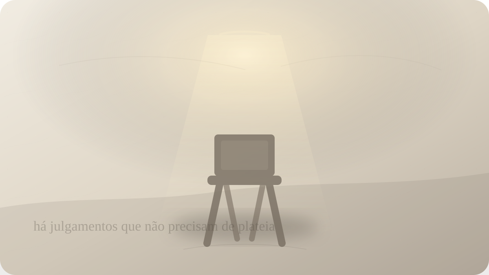

Culpa
É possível fugir do próprio julgamento?
Dostoiévski e o tribunal íntimo que continua funcionando quando ninguém mais está olhando.

Há culpas que não precisam de testemunha. Ninguém pergunta. Ninguém acusa. O mundo segue com suas tarefas, seus ruídos, seus compromissos, mas algo dentro de você continua voltando ao mesmo ponto. Uma frase dita. Uma omissão. Um gesto covarde. Uma traição pequena. Uma decisão que parecia justificável na hora e depois começou a crescer no escuro.
A culpa tem uma estranha capacidade de sobreviver ao silêncio externo. Às vezes a pessoa escapa da consequência visível, mantém a aparência, convence os outros, organiza explicações, encontra argumentos. Ainda assim, alguma coisa permanece sem absolvição. Não é a lei. Não é a opinião pública. Não é sequer Deus, para quem não crê. É uma instância íntima que continua perguntando.
Dostoiévski talvez seja um dos escritores que mais profundamente compreenderam esse tribunal interior. Em Crime e Castigo, Raskólnikov tenta provar, antes de tudo a si mesmo, que pode atravessar uma fronteira moral sem ser destruído por ela. Ele formula uma teoria, calcula, argumenta, separa homens comuns de homens extraordinários, imagina que certas transgressões poderiam ser justificadas por uma finalidade maior.
O crime acontece. Mas o verdadeiro romance começa quando a teoria encontra o corpo.
Raskólnikov não é punido imediatamente pela justiça externa. O castigo mais devastador começa antes do tribunal formal. Ele adoece, delira, se isola, oscila entre orgulho e horror, desejo de confessar e desejo de afirmar sua superioridade. A culpa não aparece como simples arrependimento. Ela aparece como rachadura na ideia que ele tinha de si mesmo.
Essa é uma das intuições mais duras de Dostoiévski: muitas vezes não sofremos apenas porque fizemos algo errado, mas porque o erro revelou que não somos quem fingíamos ser.
A pessoa que se considerava generosa descobre sua crueldade. A que se via corajosa percebe sua covardia. A que se julgava lúcida percebe que usou inteligência para justificar desejo, inveja, ressentimento ou orgulho. A culpa fere menos como memória isolada e mais como colapso da autoimagem.
Por isso tentamos fugir. Não apenas da consequência, mas da revelação. Inventamos narrativas. Eu não tive escolha. Todo mundo faria o mesmo. A situação exigia. Eu estava ferido. A outra pessoa mereceu. Não foi tão grave. Já passou. Melhor não mexer nisso. Eu sou bom no fundo. Eu só errei porque fui levado ao limite.
Algumas dessas frases podem conter parte da verdade. Contexto importa. Feridas importam. Pressões importam. Nem toda culpa é justa. Há pessoas que carregam culpas que não lhes pertencem, fabricadas por manipulação, abuso, educação opressiva ou exigências impossíveis. Dostoiévski não deve ser usado para transformar todo sofrimento moral em culpa legítima.
Mas existe uma culpa que não desaparece justamente porque reconhece algo real. Ela não se contenta com desculpas completas. Ela sabe que havia circunstâncias, mas sabe também que houve escolha. Sabe que houve medo, mas também sabe que houve omissão. Sabe que havia dor, mas também sabe que a dor foi usada como licença para ferir.
Essa culpa não pede autopunição infinita. Pede verdade.
Raskólnikov tenta fugir dessa verdade por caminhos opostos. Às vezes quer afirmar que seu crime foi apenas fracasso de força: ele não suportou ser o tipo de homem que imaginava. Outras vezes parece aproximar-se do reconhecimento moral. O conflito é terrível porque ele não quer apenas escapar da polícia; quer escapar da necessidade de se ver.
Dostoiévski entende que a consciência humana não é um tribunal simples. Ela é cheia de vozes. Em seus romances, as ideias não vivem quietas dentro de personagens obedientes. Elas brigam, seduzem, acusam, justificam, desmentem. Raskólnikov não é um exemplo moral estável. É um campo de batalha. E talvez seja por isso que ele continua tão vivo.
Quando alguém sente culpa, raramente sente uma voz única. Há a voz que acusa, a voz que relativiza, a voz que quer reparar, a voz que quer esquecer, a voz que se odeia, a voz que se vitimiza, a voz que teme perder amor, a voz que deseja ser inocente sem passar pela responsabilidade. O interior vira audiência tumultuada.
Fugir do próprio julgamento, então, não é simples. A pessoa pode mudar de cidade, apagar conversas, evitar nomes, ocupar-se até a exaustão, construir uma identidade nova, mas o julgamento acompanha porque ele não está apenas no fato passado. Está na relação ainda não resolvida com a própria verdade.
Aqui é preciso separar culpa de vergonha. A culpa diz: fiz algo que precisa ser visto. A vergonha diz: eu sou algo que não merece ser visto. A culpa pode conduzir reparação. A vergonha frequentemente conduz esconderijo. Uma pessoa envergonhada não necessariamente se torna mais ética; muitas vezes se torna mais defensiva, mais dura, mais mentirosa, mais isolada.
Dostoiévski mostra como a culpa, quando não encontra caminho para confissão, reparação ou transformação, pode virar febre. Ela não desaparece; muda de forma. Torna-se irritação, desprezo, cinismo, autopiedade, vontade de ser punido, necessidade de provar superioridade, incapacidade de receber amor. A pessoa passa a viver não depois do erro, mas ao redor dele.
Sonya, em Crime e Castigo, representa uma presença decisiva porque não responde à culpa apenas com condenação. Ela não absolve Raskólnikov de modo barato, mas também não o reduz ao crime. Sua presença abre uma possibilidade que o orgulho dele sozinho não permitiria: confessar sem deixar de existir.
Talvez esse seja um dos pontos mais profundos do romance. O ser humano precisa de verdade, mas muitas vezes só consegue chegar a ela quando há alguma forma de misericórdia. Sem misericórdia, a verdade parece aniquilação. Sem verdade, a misericórdia vira cumplicidade. O caminho difícil está entre as duas.
Em Os Irmãos Karamázov, Dostoiévski amplia essa investigação. A culpa não aparece apenas como consequência de um ato individual isolado, mas como rede de responsabilidade, omissão, desejo, ressentimento e participação indireta. Ninguém é simplesmente puro observador da vida moral. Às vezes contribuímos para o mal que depois fingimos apenas lamentar.
Essa ideia é desconfortável porque atinge a culpa cotidiana, não apenas a culpa trágica. Não é preciso cometer um crime para conhecer o tribunal interno. Basta abandonar alguém quando seria possível ficar. Dizer uma verdade tarde demais. Usar amor como arma. Perceber uma injustiça e escolher conveniência. Ferir com lucidez e depois chamar de sinceridade. Receber confiança e responder com vaidade.
A consciência registra nuances que a linguagem pública simplifica. Talvez ninguém veja. Talvez ninguém prove. Talvez ninguém cobre. Mas algo em você sabe quando houve fuga.
O problema é que muitas pessoas tentam resolver culpa com punição interna, como se sofrer bastante pagasse a dívida. Elas se torturam, repetem a cena, impedem a própria alegria, recusam perdão, sabotam relações, cultivam uma identidade de pessoa imperdoável. Parece responsabilidade, mas pode ser uma forma de egoísmo invertido: continuar no centro da cena, agora como réu eterno.
Reparar é diferente de se punir. Reparar pergunta o que pode ser feito agora com a verdade reconhecida. Pedir perdão, quando possível e quando não reabre violência. Assumir consequência. Mudar comportamento. Restituir algo. Interromper o padrão. Procurar ajuda. Aceitar que algumas coisas não podem ser consertadas, mas ainda podem impedir uma repetição.
Dostoiévski não oferece uma psicologia leve da culpa. Sua visão é atravessada por religião, sofrimento, liberdade, pecado, compaixão e redenção. Mesmo para leitores não religiosos, há ali uma percepção clínica poderosa: a pessoa não se liberta da culpa apenas provando que tinha razões. Liberta-se, se é que essa palavra cabe, quando deixa de precisar mentir sobre o que fez e sobre quem foi naquele ato.
Isso exige coragem porque a culpa verdadeira ameaça nossa narrativa central. Somos todos bons personagens na história que contamos de nós mesmos. Quando algo contradiz essa história, a tentação é editar o passado. Mas aquilo que é editado demais continua voltando como rasura.
Talvez o próprio julgamento não seja um inimigo a ser destruído. Talvez ele seja uma forma dolorosa de lucidez pedindo maturidade. Não para condenar você para sempre, mas para impedir que siga vivendo como se nada tivesse sido revelado.
Há, porém, um limite importante. Se a culpa se torna obsessiva, paralisante, desproporcional, acompanhada de desejo de desaparecer ou autoagressão, ela precisa de cuidado concreto, clínico e humano. Filosofia e literatura podem iluminar, mas não substituem apoio, terapia, proteção e presença. Nem toda consciência ferida deve ser deixada sozinha com seus próprios juízes.
O que Dostoiévski nos dá não é uma sentença única. É uma pergunta impossível de terceirizar: de qual verdade você continua fugindo porque teme que, ao encará-la, sua imagem de si não sobreviva?
Talvez a imagem não sobreviva mesmo. Mas talvez a vida moral comece justamente quando a imagem cai e sobra alguém capaz de responder.
No fim, a pergunta retorna mais simples e mais cruel: se ninguém mais o acusasse, ainda assim você saberia diante de que verdade precisa se ajoelhar?
Pergunta final
Se ninguém mais o acusasse, ainda assim você saberia diante de que verdade precisa se ajoelhar?
Fontes e leituras
- DOSTOIÉVSKI, Fiódor. Crime e Castigo. Publicado originalmente em 1866.
- DOSTOIÉVSKI, Fiódor. Os Irmãos Karamázov. Publicado originalmente em 1879–1880.
- DOSTOIÉVSKI, Fiódor. Memórias do Subsolo. Publicado originalmente em 1864.
- Project Gutenberg. Crime and Punishment, tradução de Constance Garnett.
- BAKHTIN, Mikhail. Problems of Dostoevsky's Poetics.
- FRANK, Joseph. Dostoevsky: The Miraculous Years, 1865–1871.
Leituras relacionadas
E você, o que está sentindo agora?
Escolha seu momento e encontre uma reflexão filosófica para atravessá-lo com mais clareza.
Encontrar uma reflexão